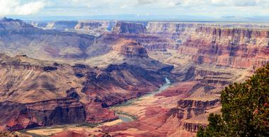
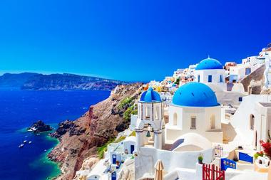

Maroon Bells, USA.

Located only about 10 miles from Aspen, Colorado, the Maroon Bells are two 14,000-foot peaks in the Elk Mountains that are reflected in crystal-clear Maroon Lake, snuggled in a glacial valley. They are the crown jewels of the Rocky Mountains and by far one of the most photographed scenes in the country.
It is difficult to say when the timeless beauty of these two sentinels mirrored in the lake is more striking: In the summer, when every hiking trail takes you through fields of wild flowers, in the fall, when tall aspen trees dazzle with a rainbow of fall colors, or in the winter, when snow and ice silence the world. The best photo opportunities are from one of the many hiking trails – access by motor vehicles is limited. The lake is popular among fly-fishermen – even if they don’t catch anything, the beauty all around them is enough.
Grand Canyon, USA.
The Grand Canyon is a steep, 1-mile-deep, and up to 18-mile-wide gash in the fabric of the world, an immense gorge carved by the Colorado River over the last 5,000 years. Its sheer size is breathtaking and although you can see only a small portion of it even from the best vantage point, its geology and its age fire the imagination. The layers of colorful rock show the passage of time and some of the rocks at the bottom are 1,8 billion years old.
There is a lot of life growing on the canyon’s steep sides – you can see more of it hiking the trails of the northern rim, where it is also less crowded. Most people limit their visit to the breathtaking views from the southern rim. Some of the most popular viewpoints are Yavapai Observation Station, Mary Colter’s Lookout Studio, and Mather Point.
Blue Ridge Mountains, USA.

Located in the eastern United States and part of the massive Appalachians, the Blue Ridge Mountains stretch from their southernmost end in Georgia all the way northward to Pennsylvania. Between the Blue Ridge and the rest of the Appalachians lies the Great Appalachian Valley. When seen from a distance, the Blue Ridge Mountains appear blue – the trees that release a gas called isoprene are responsible for the bluish color and thus the mountains’ name.
Within the Blue Ridge Mountains are two large national parks: The Shenandoah and the Great Smoky Mountains. The best way to enjoy and get to know Blue Ridge is by taking the Blue Ridge Parkway, a 469-mile-long beautiful scenic highway that runs along the ridge together with the renowned Appalachian Trail and which connects the two parks.
Oia, Santorini, Greece.
Located on top of a cliff with a spectacular view of the Palea volcano, Nea Kameni, and the island of Thirassia, Oia is the most popular and arguably the most beautiful of all the picturesque villages of the Greek island of Santorini. Only about 11 km from Fira, on the north of the island, Oia will charm you with its traditional stone houses lining the narrow streets, breathtaking blue-domed churches, and sunbaked verandas.
While the village has its share of taverns, souvenir shops, and cafes, Oia is more quiet and laid-back than busy Fira and most people enjoy its quaint beauty by slowly exploring its narrow streets. Stroll through the village’s small port of Ammoudi by descending 300 steps down the cliff, or visit colorful galleries showcasing art from the many artists who fell in love with the village and made it their home. Oia, Santorini is considered by many one of the prettiest places in the world.